1
Click the clock icon in the left rail
It opens My Workforce: punch in and out, track your hours, request leave, and see how you're doing.
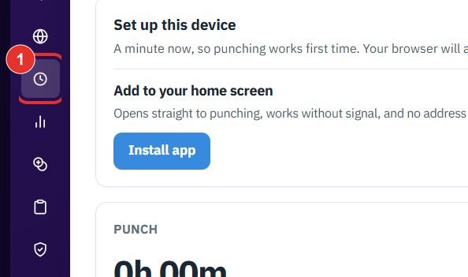
Punch in and out from your phone or PC, take breaks, and ask your supervisor to fix a missing punch. Each step shows the exact button to click. Nothing on this page punches for you.
Do this every working day. The punch screen is called My Workforce (app.bpmsquare.com/wfm/me). The older /wfm-app address opens the same page.
It opens My Workforce: punch in and out, track your hours, request leave, and see how you're doing.

Click Turn on under Get a reminder to punch out. It notifies this phone after a long day. Nothing else is sent.
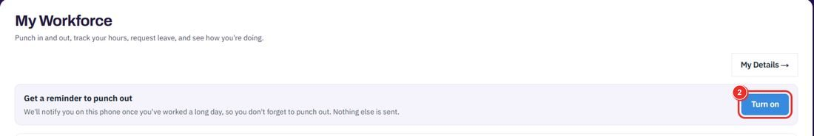
The big green button starts your day. The counter above it reads 0h 00m and Not checked in yet until you do. Your browser may ask for permission; tap Allow.
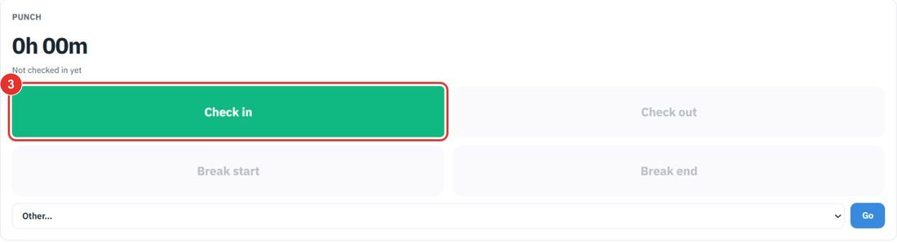
Break start and Break end are grey until they apply. Click Break end when you are back.
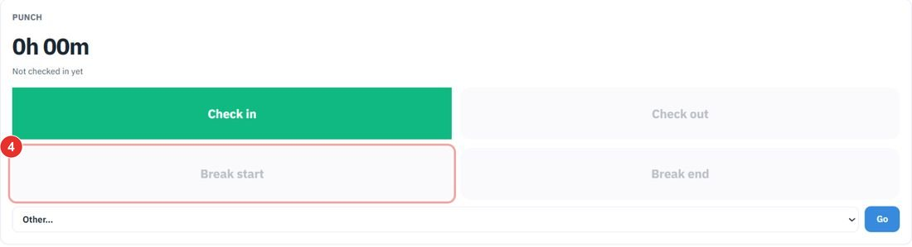
Check out is grey until you have checked in.
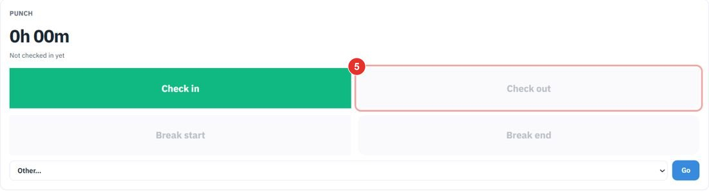
Open the Other… list, choose OT in, then click Go. Overtime is reviewed on the Corrections page, in its Overtime tab.
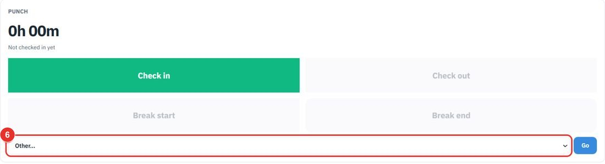
Do this when a punch is missing or wrong. Your supervisor reviews it; nothing changes until they approve.
It opens a page called My Details with five tabs: Time, Requests, Profile, Timeline and Calendar.
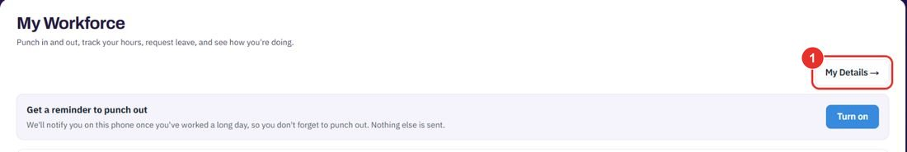
It shows how your month is going and a daily record with In, Out, Breaks taken, Gross and Total worked for each day.
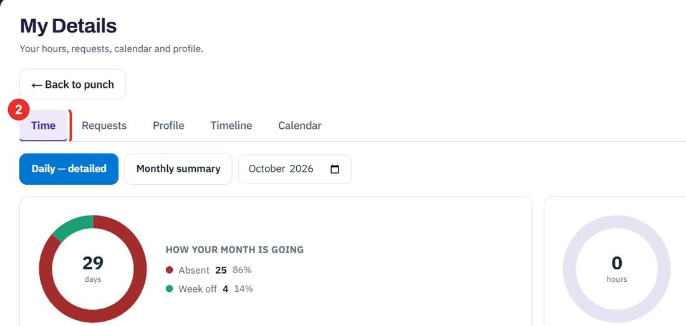
The button is under Correction requests at the bottom of the Time tab.
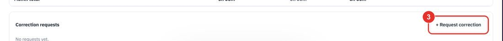
A window called Request a correction opens. Choose the day and the time that should have been recorded.
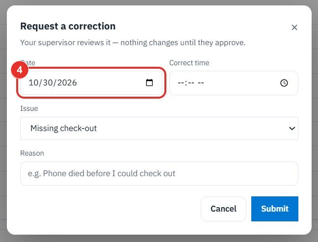
The list has Missing check-in, Missing check-out, Missing break start, Missing break end, Wrong time and Other. Add a Reason below it.
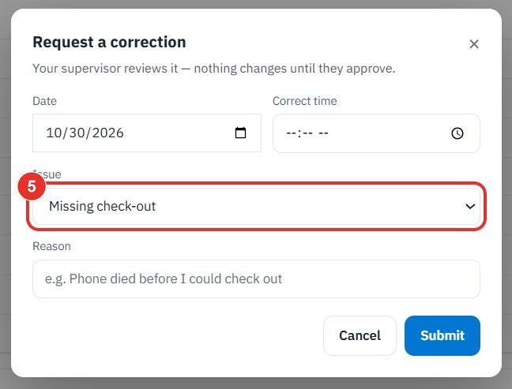
Submit sends the request to your supervisor. Cancel closes the window.
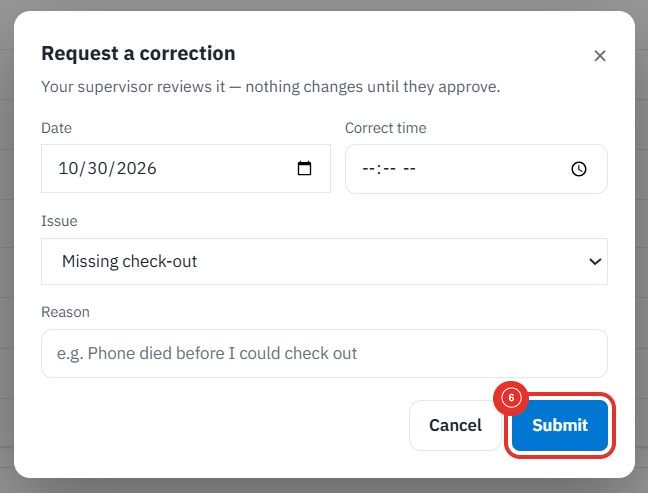
Twenty minutes on a live workspace. Your BOQ, your suppliers.